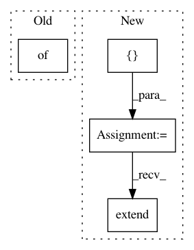

68e3699215df53a6bd57675c75d937f2d3a75891,nilearn/datasets/atlas.py,,fetch_atlas_allen_2011,#,787
Before Change
"RSN_HC_unthresholded_tmaps.nii",
"rest_hcp_agg__component_ica_.nii"]
labels = {"Basal Ganglia": [21],
"Auditory": [17],
"Sensorimotor": [7, 23, 24, 38, 56, 29],
"Visual": [46, 64, 67, 48, 39, 59],
"Default-Mode": [50, 53, 25, 68],
"Attentional": [34, 60, 52, 72, 71, 55],
"Frontal": [42, 20, 47, 49],
}
filenames = [(f, url + f, opts) for f in files]
data_dir = _get_dataset_dir(dataset_name, data_dir=data_dir,
After Change
"RSN_HC_unthresholded_tmaps.nii",
"rest_hcp_agg__component_ica_.nii"]
labels = [("Basal Ganglia", [21]),
("Auditory", [17]),
("Sensorimotor", [7, 23, 24, 38, 56, 29]),
("Visual", [46, 64, 67, 48, 39, 59]),
("Default-Mode", [50, 53, 25, 68]),
("Attentional", [34, 60, 52, 72, 71, 55]),
("Frontal", [42, 20, 47, 49])]
networks = [[name] * len(idxs) for name, idxs in labels]
filenames = [(f, url + f, opts) for f in files]
data_dir = _get_dataset_dir(dataset_name, data_dir=data_dir,
verbose=verbose)
sub_files = _fetch_files(data_dir, filenames, resume=resume,
verbose=verbose)
fdescr = _get_dataset_descr(dataset_name)
params = [("description", fdescr),
("rsn_indices", labels),
("networks", networks)]
params.extend(list(zip(keys, sub_files)))
return Bunch(**dict(params))
In pattern: SUPERPATTERN
Frequency: 3
Non-data size: 4
Instances
Project Name: nilearn/nilearn
Commit Name: 68e3699215df53a6bd57675c75d937f2d3a75891
Time: 2017-01-19
Author: alexsavio@gmail.com
File Name: nilearn/datasets/atlas.py
Class Name:
Method Name: fetch_atlas_allen_2011
Project Name: kymatio/kymatio
Commit Name: 60c2e01bfc93bc01da21b79ebe9f222e601e1931
Time: 2020-02-18
Author: janden@flatironinstitute.org
File Name: kymatio/scattering2d/core/scattering2d.py
Class Name:
Method Name: scattering2d
Project Name: facebook/FAI-PEP
Commit Name: d179fb2bf6ef8d286da62209bda1ca2cd22716c9
Time: 2019-12-02
Author: huaminli@fb.com
File Name: benchmarking/frameworks/generic/generic.py
Class Name: GenericFramework
Method Name: runOnPlatform